!probe
A live symbol context. Attach, then search names together.
Windows kernel security · anti-cheat research
Hawkeye Community is the open-source bench — driver-backed
!probe, !etw, and memory work on Windows 10/11
for anti-cheat and kernel research on systems you administer.
Authorized systems only. Do not use against third-party software, games, or production systems you do not administer.
!probeA live symbol context. Attach, then search names together.
!etwWhere the CPU ran in a short window. Process, thread, or the whole system.
This is the Community walkthrough. Run !help for the full
command catalog; run any command with no arguments for usage.
Hawkeye Lab includes every command here plus detection and
!analyze — see the Lab page.
Start Hawkeye Community and open Driver setup. The last row, Driver, is the one that matters.
If you see Figure 1, work the red rows. Enable test signing turns on the test-signing environment and installs the Hawkeye test certificate. Open Windows Security is where you turn Memory integrity off.
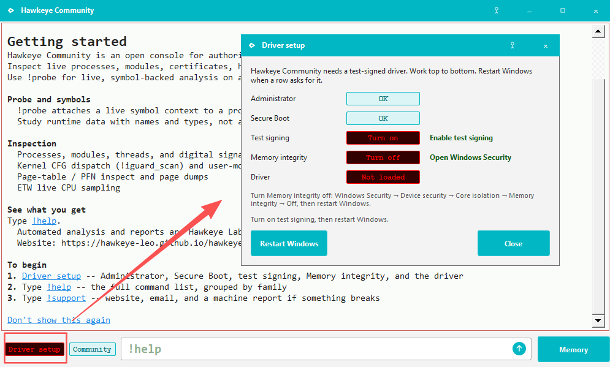
Figure 2 means the changes are staged. Restart Windows.
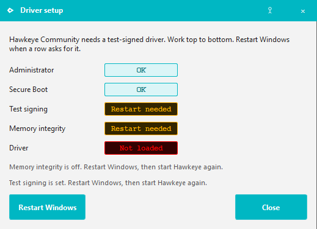
If the machine boots with Secure Boot, Windows blocks bcdedit.
Turn Secure Boot off in firmware first, start Windows, then use
Enable test signing.
After the restart, Driver OK on the status bar means
the environment is ready. !help is the full catalog.
Run any command with no arguments for usage.
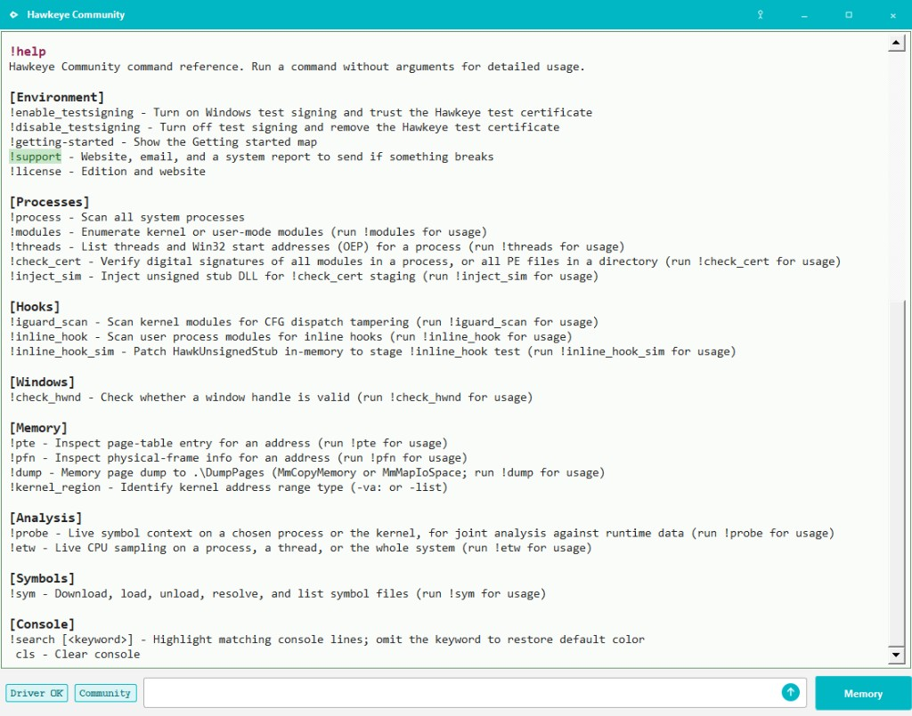
!help listing the bench.
If you hit a bug, or you have a suggestion, run !support
and write to us.
!probe — the entry
If you are curious about a process — System (kernel, PID 4), or
dwm.exe — you need one place to start. That is
!probe.
The question is rarely one name. How composition works. How the desktop keeps a window's pixels from other clients. How the kernel schedules threads. How ETW reaches a third-party driver. Those trails cross modules.
!probe attaches a live symbol context to that process
(or the kernel) and lets you query many names together, so the
clues stay in one view. IDA — or IDA-MCP — is how you get to the
one you want.
Run !probe with no arguments for usage. Attach, then
-find.
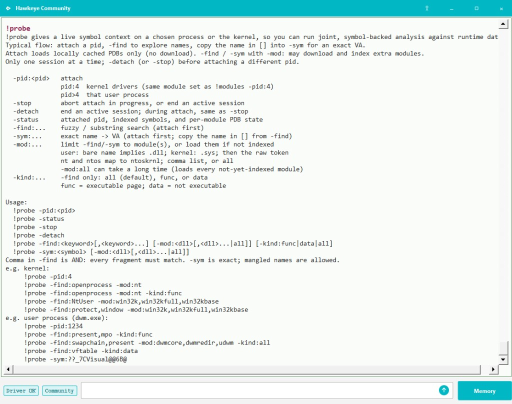
!probe with no arguments — read this, then attach.
-find only searches symbols that are already indexed.
The first time, pass -mod: with the modules you care
about. Missing PDBs are downloaded and loaded — that takes a
moment.
Example from the usage:
!probe -find:swapchain,present -mod:dwmcore,dwmredir,udwm -kind:all.
Those three DLLs are the ones you are looking at. The comma is AND:
a name must contain both present and
swapchain. That joint hit is the start of the next
question, not the answer.
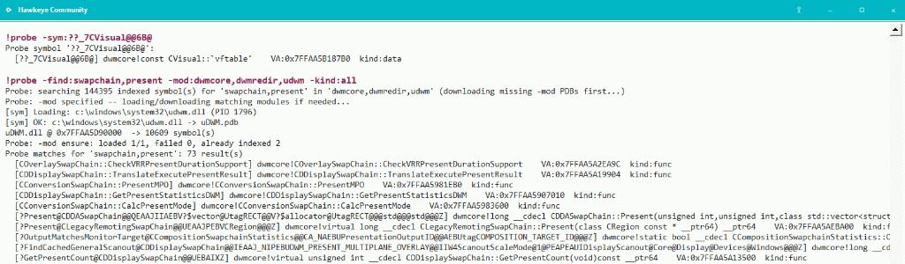
!probe -status shows what is loaded so far.
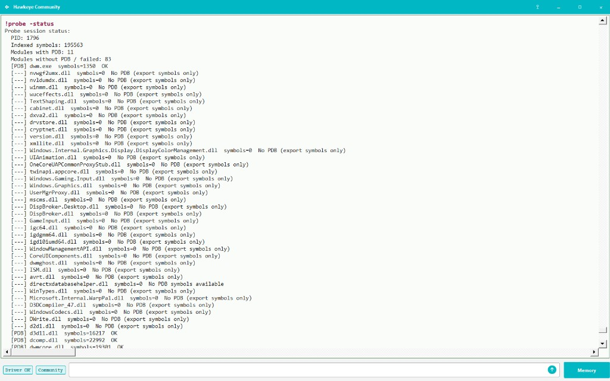
!probe -status — which symbols are loaded.!etw — who actually ran
!probe is names. !etw is execution:
which addresses ran in this window.
Injected code is often not a module. It lives on the heap inside another process. Nothing in the module list names it. Sampling sees it only if a thread ran it.
Run !etw with no arguments for usage. Pick a process,
a thread, or -all.
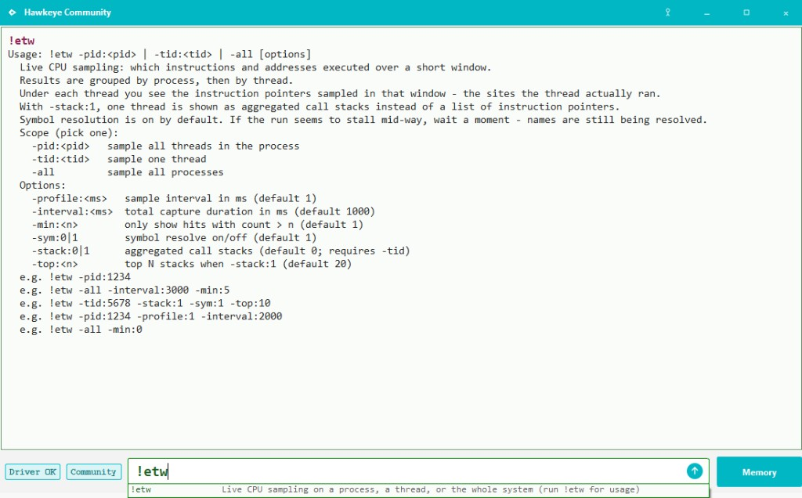
!etw with no arguments — read this, then pick a scope.Default sampling lists RIP under each thread — the instruction pointers that thread was seen at. That is enough to sketch what it was doing.
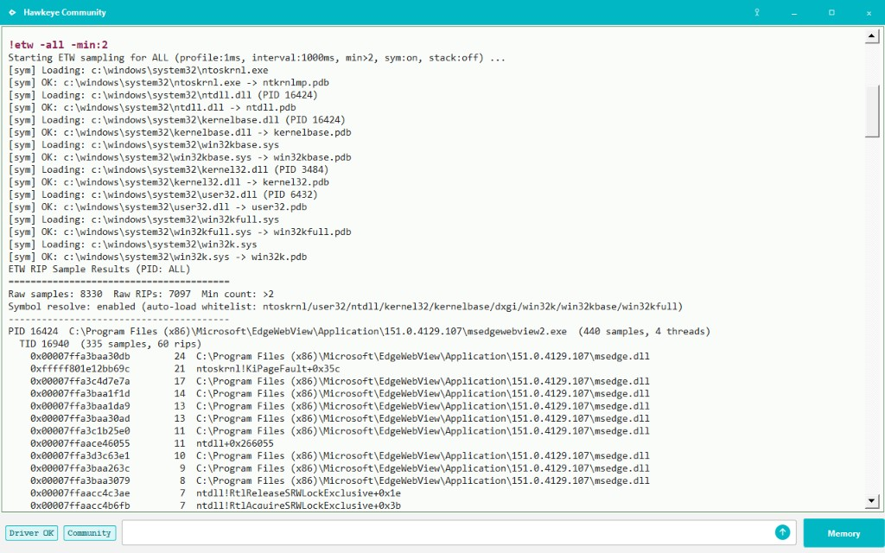
For one thread,
!etw -tid:<tid> -stack:1
samples call stacks instead. Stacks hit in that window are shown.
Figure 9 is the thread that composes in dwm.exe.
The stacks are dwm putting windows together.
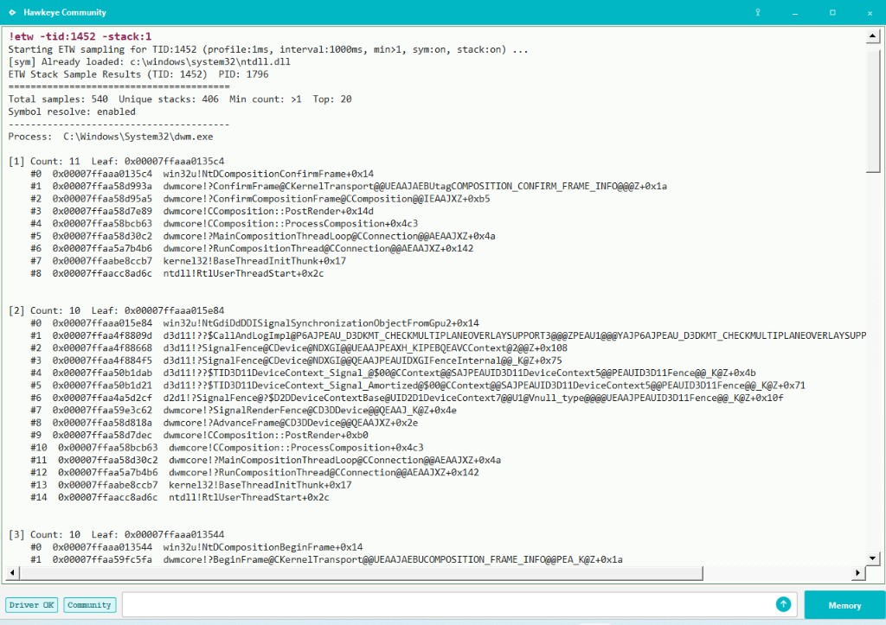
dwm.exe — composition stacks for that thread.
!sym downloads and loads symbols. !etw
resolves names from what is loaded. Run !sym for
usage.
!kernel_region — which band
A kernel VA has a type. !kernel_region names it.
!kernel_region -list shows the live IDs on this
machine. They differ by OS.
Typically ntoskrnl, driver images, and UEFI land in
imageMType. Kernel stacks in
stackMType. Paged pool in
pagedMType. Nonpaged pool in
nonpagedMType. Unexpected kernel code often lands in
systemMType.
Run !kernel_region with no arguments for usage.
-list is the map. -va: asks one address.
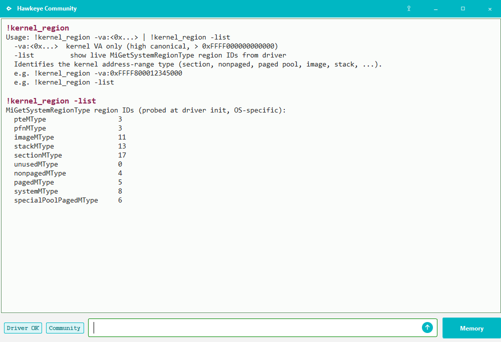
-list — IDs on this machine.
-va: takes one address. Use a RIP from
!etw. This one is in ntoskrnl, so the
type is image. That narrows the scope. Deeper analysis starts
from there.
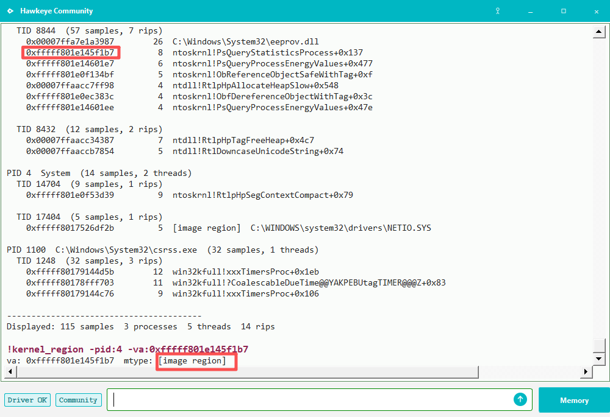
-va: — this RIP is image.A VA from the bench is enough. Memory opens the viewer. PID, address, ReadMemory. One page: disassembly and hex.
One way to get that VA:
!iguard_scan -all.
It walks kernel modules for
_guard_dispatch_icall pits. A hit is a placeholder
that points at executable system or nonpaged memory.
-all is every kernel module;
-m: is one driver. Run
!iguard_scan with no arguments for usage.
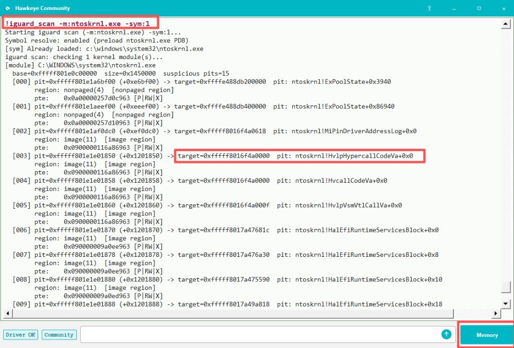
!iguard_scan -m:ntoskrnl.exe -sym:1 — a pit with names, then Memory.Copy the target into Memory.
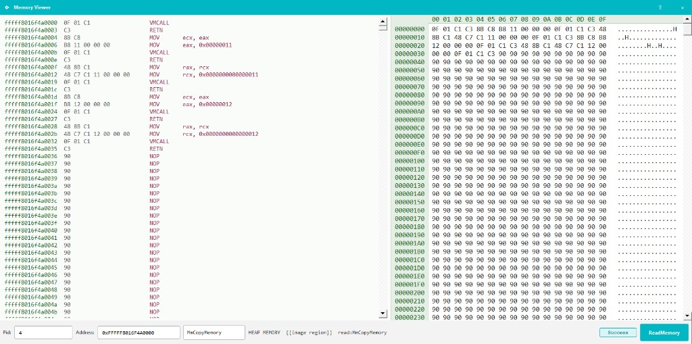
After the read, the console counts what the page decoded. That is the start of looking closer, not a verdict.
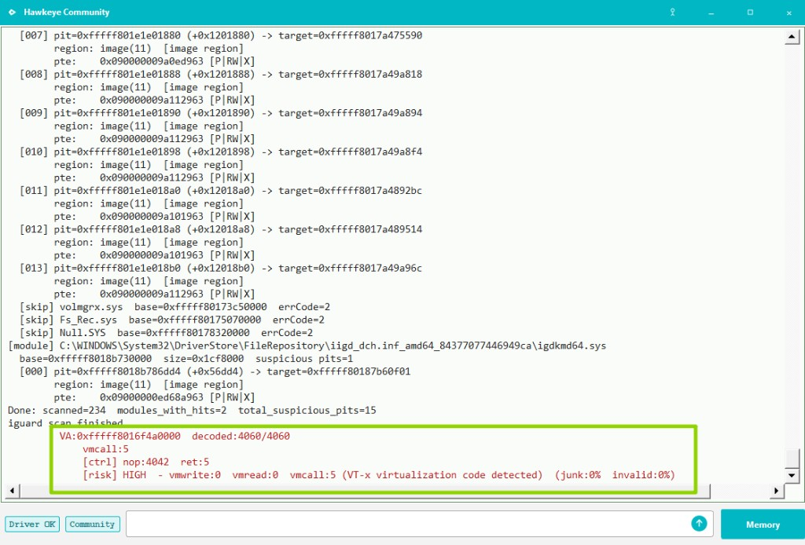
!support
When something breaks, run !support.
It prints a system report. Email that to us.
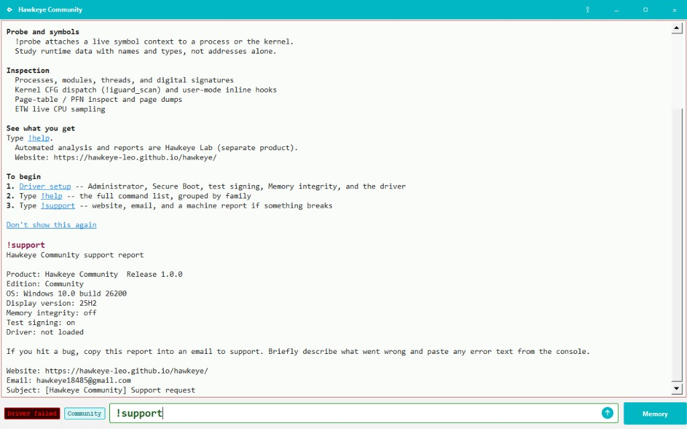
!support — the report to send.
!help is the full catalog. Anything not walked through
above — !sym, !modules,
!threads, and the rest — starts there.
Run a command with no arguments for usage.
Hawkeye Lab detection and reports on the same bench
Community is the open research console. Lab adds automated high-risk detection and a scored analysis report on top of the same foundation.
| Capability | Community | Lab |
|---|---|---|
| Live console + driver setup | ✓ | ✓ |
!probe, !etw, memory tools |
✓ | ✓ |
| High-risk detection commands | — | ✓ |
!analyze (20-check workflow) |
— | ✓ |
| Scored analysis report (PDF / text) | — | ✓ |
Lab -demo staging |
— | ✓ |
Lab includes everything in Community. Community: GPL-3.0-or-later · Lab: subscription ($35 / month).
Commands, sample reports, and the illustrated guide: Hawkeye Lab.